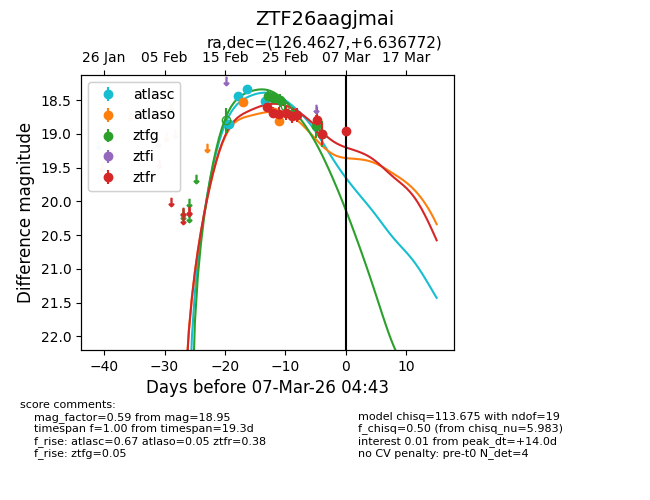
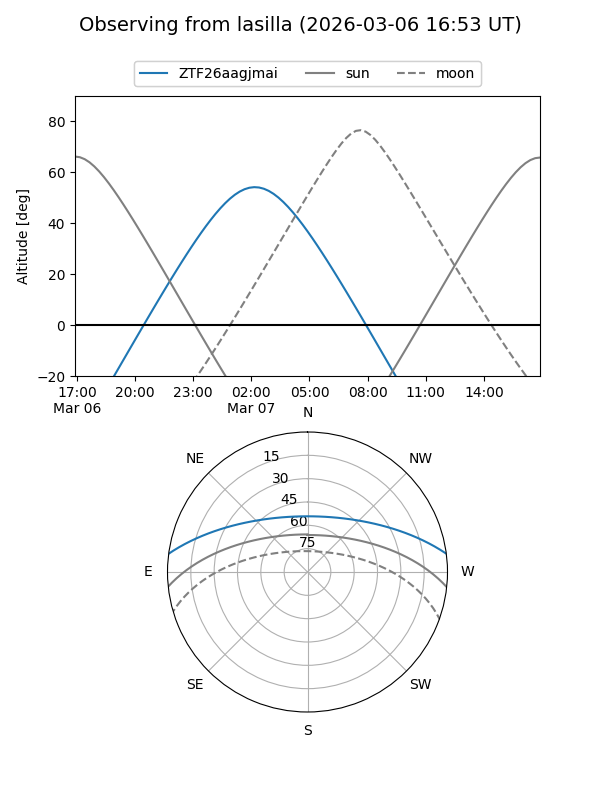
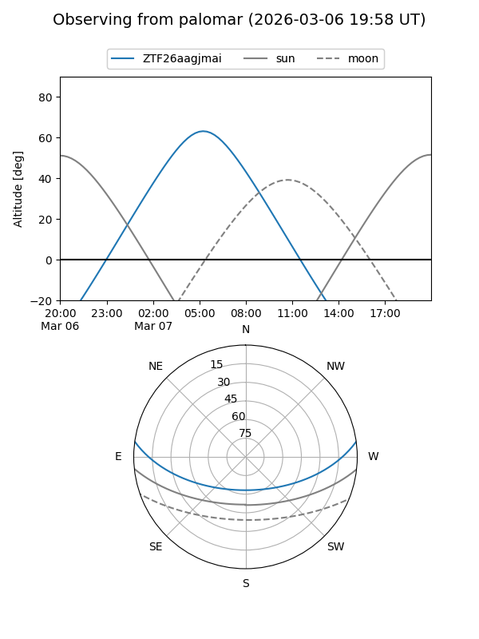
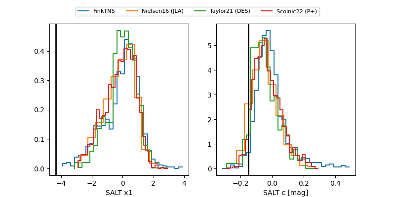

ZTF26aagjmai
Target ZTF26aagjmai at 2026-03-07 04:44
Aliases and brokers:
FINK: link
Lasair: link
ALeRCE: link
alt names
ZTF26aagjmai (ztf,fink_ztf)
Coordinates:
equatorial (ra, dec) = 126.4627,+6.63677
equatorial (HMS+DMS) = 08:25:51.06,+06:38:12.38
galactic (l, b) = (217.8608,+23.99548)
Flags:
Photometry:
last atlasc=18.52, atlaso=18.81, ztfg=19.00, ztfr=18.95
4 atlasc, 3 atlaso, 6 ztfg, 9 ztfr detections
Lightcurve

Visibility


Additional plots
